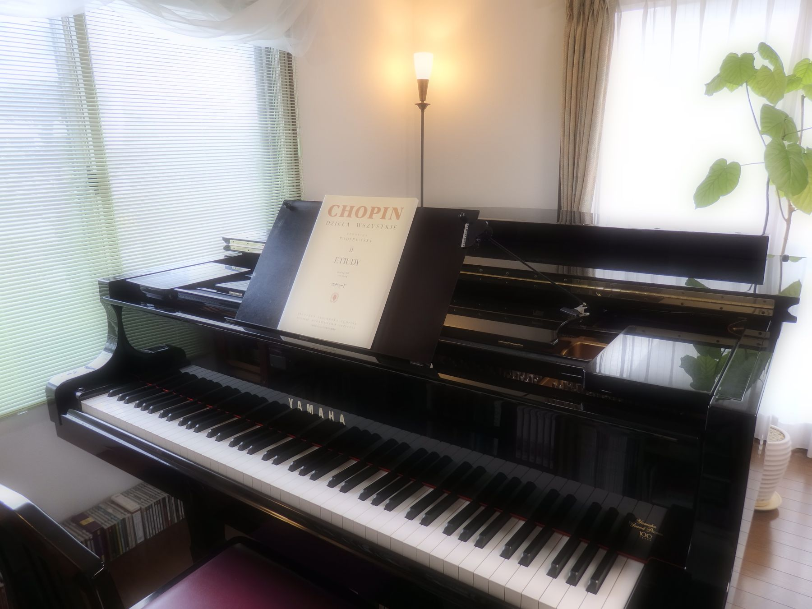
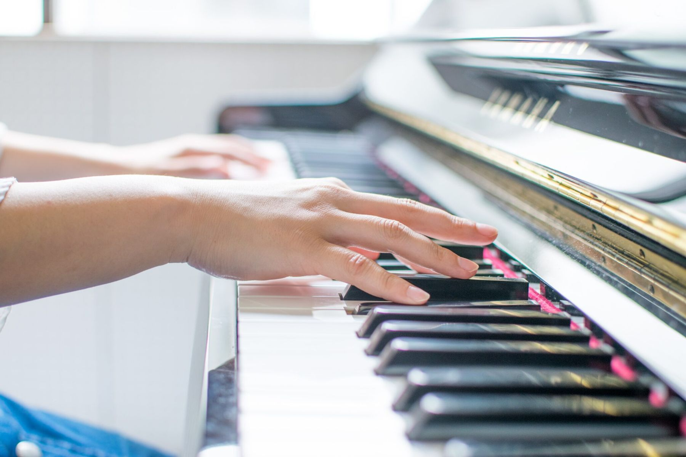
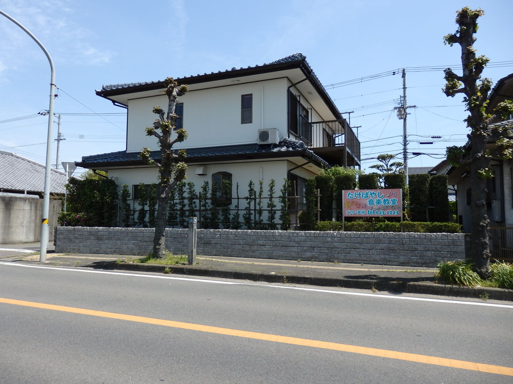

はじめての方も、保護者に
ピアノ経験が無くても大丈夫。
生徒さんの保護者のおよそ半数はピアノ未経験です。幼児にも分かりやすいレッスンを心がけ、レッスン導入時には保護者の方にその日の指導内容をお伝えしています。
Piano & Vocal Lessons — Tokushima
徳島市国府町の、ピアノと声楽の音楽教室。
「演奏する力」と「聴く力」を育て、
音楽を生涯の友にするレッスンを。

Policy
生徒さんの保護者のおよそ半数はピアノ未経験です。幼児にも分かりやすいレッスンを心がけ、レッスン導入時には保護者の方にその日の指導内容をお伝えしています。
ピアノは脳の発達に良いだけでなく「一生涯の友」にもなり得ます。教材は一人ひとりに合わせてご提案し、「演奏する力」と「演奏を聴く力」の両方を養います。

Why Piano
楽譜を目で見て、脳が理解し、指先に指令を送り、耳で音を確かめながら目は次の音符へ――。ピアノの演奏は、この流れを瞬間的に連続して行っています。
左右の手で異なる動きを同時に行うことで、物事の全体をとらえる「同時処理能力」が高まるとも言われています。
Graduates
生徒自らが、ピアノの効果を証明してくれています。
Brain Training Piano
「脳トレピアノⓇ」は、ピアノ指導にゲーム・コーチング・心理学などのエッセンスをプラスしたユニークなメソッド。常に「脳が活性化する」ことを視野に入れたプログラムです。
60歳以上の方限定
右手と左手で異なる音を奏でるピアノは、「少し難しい」と感じる、脳の活性化にぴったりの活動。人生100年時代、いつまでも若々しい脳を維持するために、ピアノを始めてみませんか？
Lesson & Fee
いずれも発表会を含みます。入会時にお渡しする「年間レッスン予定表」に基づいてレッスンしています。
1ヶ月以上欠席される場合は、在籍料として月謝の半額を頂戴します。連絡無しに1ヶ月以上欠席された場合は、退会扱いとさせていただきます。
Profile
徳島県生まれ。小学4年生から高校卒業までは九州・佐賀県で過ごしました。木登りや、自転車でどこまでも漕いでいくような子供でした。
趣味は紅茶とお酒。紅茶は好きが高じて「紅茶ソムリエ」の資格を取得しています。お酒は何でも飲み（め）ますが、近頃は「家呑み」が主流です。
Voice
長くピアノを続けてくれた生徒さんのお母様に、お話を伺いました。
大学生 H君のお母様
続けてよかったことは？
勉強の合間や試合の前日など、ピアノを弾くことで気持ちのバランスを上手に取っているように思います。生涯を通じての趣味ができ、継続することの大切さを体得しました。
中学1年 Y君のお母様
続けてよかったことは？
ピアノに限らず色々な音楽、日本の伝統芸能や舞台美術にも興味を持つようになりました。発表会を経験する事で、集中力や最後までやり遂げる力が身についてきたと思います。
高校生 Nさんのお母様
続けてよかったことは？
小学1年生で約束した「英雄ポロネーズが弾けるまで続ける」を高校2年生で実現。一発勝負の本番にやたらと強くなり、ピアノが親子の共通の話題にもなりました。
どんなに優秀に見える生徒さんでも、小さい頃は「ピアノが嫌」な時期がありました。
保護者の方と講師の二人三脚で、これからも子供達を支えていきます。
Q & A
はい、もちろん大丈夫です。子供さんのレッスンの場合、保護者の半数以上がピアノの経験がありません。大人の方も未経験者が多数です。どうぞご安心ください。
レッスンの空きがあれば随時募集しています。現在は満員のため、新規生の募集は2027年2月頃から開始予定です。
レッスンの前日までに欠席のご連絡を頂いた場合のみ対応しています。現在は空き時間がないため、夏休みや冬休み等の長期休暇の「補講日」にて対応しています。
当教室では3歳半からお引き受けしています。
初めはキーボードでも構いませんが、レッスン開始時には準備をして頂いております。88鍵盤そろった電子ピアノでもよろしいかと思います。楽器店や調律師の方にも知人がおりますので、ご購入の際はご相談ください。
はい、毎年行っております。1年間の練習の成果を披露する場と位置付けておりますので、原則全員参加です。
Access

県道徳島鴨島線（徳鴨バイパス）を鴨島方面へ。マルナカ石井店とドラッグストアコスモス竜王店の十字路を右折し、北へ直進。竜王公園を通過した後、左手のバス停の道路を挟んで向かい側です。ピンクの看板が目印です。